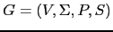
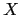
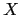

Sig: Manejo en yapp de
Sup: Análisis LR
Ant: Esquemas de Traducción
Err: Si hallas una errata ...
Una definición dirigida por la sintáxis es un pariente cercano
de los esquemas de traducción. En una definición dirigida por la
sintáxis una gramática

se aumenta
con nuevas características:
- A cada símbolo
 de la gramática se le asocian
cero o mas atributos. Un atributo queda caracterizado por un identificador
o nombre y un tipo o clase. A este nivel son atributos formales,
como los parámetros formales, en el sentido de que su realización
se produce cuando el nodo del árbol es creado.
de la gramática se le asocian
cero o mas atributos. Un atributo queda caracterizado por un identificador
o nombre y un tipo o clase. A este nivel son atributos formales,
como los parámetros formales, en el sentido de que su realización
se produce cuando el nodo del árbol es creado.
- A cada regla de producción
 se le asocian un conjunto de reglas de evaluación de los atributos
o reglas semánticas que indican que el atributo en la parte
izquierda de la regla semántica depende de los atributos que aparecen en la parte
derecha de la regla. El atributo que aparece en la parte izquierda de la regla semántica
puede estar asociado con un símbolo en la parte derecha de la regla de producción.
se le asocian un conjunto de reglas de evaluación de los atributos
o reglas semánticas que indican que el atributo en la parte
izquierda de la regla semántica depende de los atributos que aparecen en la parte
derecha de la regla. El atributo que aparece en la parte izquierda de la regla semántica
puede estar asociado con un símbolo en la parte derecha de la regla de producción.
- Los atributos de cada símbolo de la gramática
 se dividen en dos grupos disjuntos: atributos sintetizados
y atributos heredados. Un atributo de 
es un atributo heredado
si depende de atributos de su padre y hermános en el árbol.
Un atributo sintetizado es aquél tal que el valor del atributo depende
de los valores de los atributos de los hijos,
es decir en tal caso
ha de ser una variable sintáctica
y los atributos en la parte derecha de la regla semántica deben
ser atributos de símbolos en la parte derecha de la regla de producción
asociada.
se dividen en dos grupos disjuntos: atributos sintetizados
y atributos heredados. Un atributo de 
es un atributo heredado
si depende de atributos de su padre y hermános en el árbol.
Un atributo sintetizado es aquél tal que el valor del atributo depende
de los valores de los atributos de los hijos,
es decir en tal caso
ha de ser una variable sintáctica
y los atributos en la parte derecha de la regla semántica deben
ser atributos de símbolos en la parte derecha de la regla de producción
asociada.
- Los atributos predefinidos se denominán atributos intrínsecos.
Ejemplos de atributos intrínsecos son los atributos
sintetizados de los terminales, los cuáles se han
computado durante la fase de análisis léxico. También
son atributos intrínsecos los atributos heredados del símbolo
de arranque, los cuales son pasados como parámetros
al comienzo de la computación.
La diferencia principal con un esquema de traducción está en que
no se especifica el orden de ejecución de las reglas semánticas.
Se asume que, bien de forma manual o automática, se resolverán
las dependencias existentes entre los atributos determinadas
por la aplicación de las reglas semánticas, de manera
que serán evaluados primero aquellos atributos que no dependen
de ningún otro, despues los que dependen de estos, etc. siguiendo
un esquema de ejecución que viene guiado por las dependencias
existentes entre los datos.
Aunque hay muchas formas de realizar un evaluador de una definición
dirigida por la sintáxis, conceptualmente, tal evaluador debe:
- Construir el árbol de análisis sintáctico para la gramática
y la entrada dadas.
- Analizar las reglas semánticas para determinar los atributos,
su clase y las dependencias entre los mismos.
- Construir el grafo de dependencias de los atributos,
el cual tiene
un nodo para cada ocurrencia de un atributo en el árbol de análisis
sintáctico etiquetado con dicho atributo. El grafo tiene una arista entre dos
nodos si existe una dependencia entre los dos atributos a través de alguna
regla semántica.
- Supuesto que el grafo de dependencias determina un orden parcial
(esto es cumple las propiedades reflexiva, antisimétrica y transitiva)
construir un orden topológico compatible con el orden parcial.
- Evaluar las reglas semánticas de acuerdo con el orden topológico.
Una definición dirigida por la sintáxis en la que las reglas semánticas
no tienen efectos laterales se denomina una gramática atribuída.
Si la definición dirigida por la sintáxis puede ser realizada
mediante un esquema de traducción se dice que es L-atribuída.
Para que una definición dirigida por la sintáxis sea L-atribuída
deben cumplirse que cualquiera que sea la regla de producción
 , los atributos heredados de
, los atributos heredados de
 pueden depender únicamente de:
pueden depender únicamente de:
- Los atributos de los símbolos a la izquierda de
- Los atributos heredados de

Nótese que las restricciones se refieren a los atributos heredados.
El cálculo de los atributos sintetizados no supone
problema para un esquema de traducción. Si la gramática
es LL(1), resulta fácil realizar una definición
L-atribuída en un analizador descendente recursivo predictivo.
Si la definición dirigida por la sintáxis sólo utiliza
atributos sintetizados se denomina S-atribuída. Una
definición S-atribuída puede ser fácilmente trasladada a un programa
yapp.
Sig: Manejo en yapp de
Sup: Análisis LR
Ant: Esquemas de Traducción
Err: Si hallas una errata ...
Casiano Rodríguez León
2013-03-05